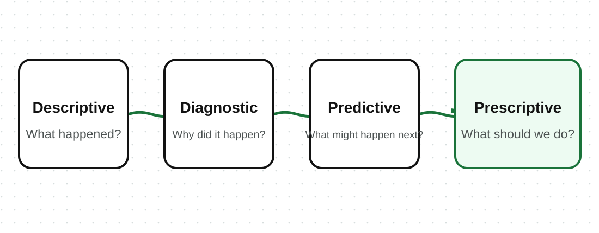
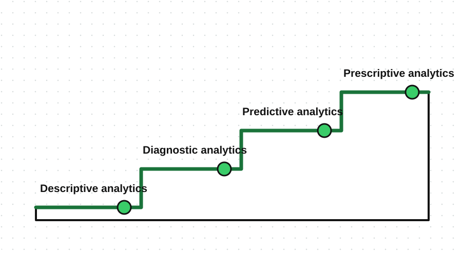

A manager looks at last month's sales report and asks three questions in one meeting: "What happened? Why did it happen? What should we do next?" Each question needs a different kind of analysis.
Analytics means using data to understand what happened, why it happened, what may happen next, or what action to take.

The four often build on one another, and that is the useful part. You cannot explain why rice sales rose until you know that they rose. Understanding what drove last month can strengthen a forecast of next month. And a recommendation is more trustworthy when the earlier questions have supplied evidence for it.
So when an organization says it wants prediction, the honest first question is whether it can yet describe what already happened.
